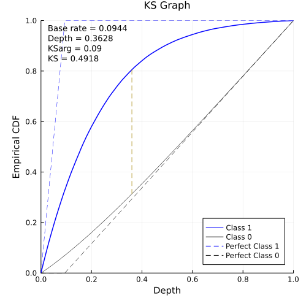
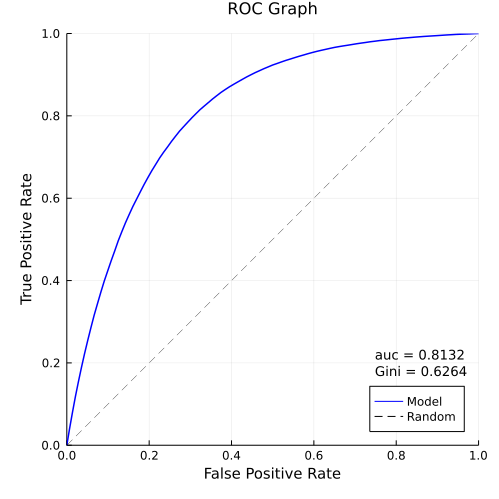
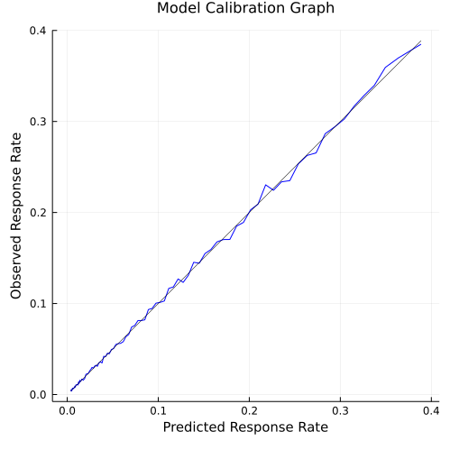
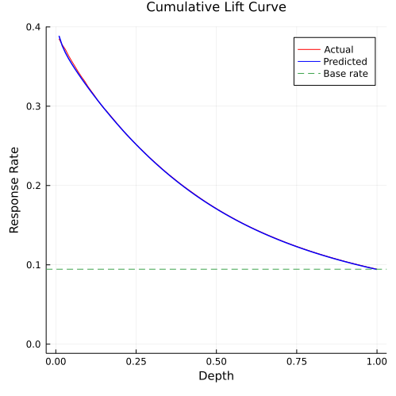

Binary Classifier Diagnostics
While kstest and roc provide diagnostic measures for comparing model performance, we may want to graphs and tables to document its performance, bcdiag allows us to do this easily.
using ROCKS
using Random
using Distributions
using BenchmarkTools
Random.seed!(888)
const x = rand(Uniform(-5, 5), 1_000_000)
const logit = -3.0 .+ 0.5 .* x .+ rand(Normal(0, 0.1), length(x))
const prob = @. 1.0 / (1.0 + exp(-logit))
const target = rand(length(x)) .<= probkstest:
kstest(target, prob)(n = 1000000, n1 = 94316, n0 = 905684, baserate = 0.094316, ks = 0.49102956987524427, ksarg = 0.09243578716933178, ksdep = 0.357299)
roc:
roc(target, prob)(conc = 69434969897, tied = 392052, disc = 15985130195, auc = 0.8128630985401923, gini = 0.6257261970803847)
These functions are performant:
@benchmark kstest($target, $prob)BechmarkTools.Trial: 28 samples with 1 evaluations.
Range (min … max): 172.775 ms … 187.263 ms ┊ GC (min … max): 0.00% … 0.53%
Time (median): 180.999 ms ┊ GC (median): 0.55%
Time (mean ± σ): 181.044 ms ± 3.561 ms ┊ GC (mean ± σ): 0.41% ± 0.34%
▃ ▃ █ ▃ ▃
▇▁▁▁▁▁▁▁▁▇▁▁▁█▁▁▁▁▁▁▁▁▇▇▁▇█▁▁▁▁▇▇█▁█▁▇▇▇▁▁▁█▁▁▇▁▁▁▇▇▇▁▁▁▇▇▁▁▇ ▁
173 ms Histogram: frequency by time 187 ms <
Memory estimate: 46.02 MiB, allocs estimate: 19.@benchmark roc($target, $prob)BechmarkTools.Trial: 46 samples with 1 evaluations. Range (min … max): 109.678 ms … 111.163 ms ┊ GC (min … max): 0.00% … 0.99% Time (median): 109.969 ms ┊ GC (median): 0.00% Time (mean ± σ): 110.065 ms ± 374.704 μs ┊ GC (mean ± σ): 0.11% ± 0.31% ▂ █▅ ▅▅▅ █▅▅▁▁██▅▁█████▅▁▅▅█▅▅▅▅▁▅▁▁▁▁▁▁▁▁▁▁▁▁▁▁▁▁▁▁▁▁▁▁▅▁▁▁▁▅▁▁▁▁▅▁▁█ ▁ 110 ms Histogram: frequency by time 111 ms < Memory estimate: 7.75 MiB, allocs estimate: 8.
bcdiag
In additional to numeric metrics, often we would like to have plots and tables as part of final model documentation. The bcdiag function allows easy generation of plots and tables.
Running bcdiag prints a quick summary:
mdiag = bcdiag(target, prob)Base rate: 0.0943 n: 1000000 n1: 94316 n0: 905684 ks: 0.491 occurs at value of 0.09243578716933178 depth of 0.357299 roc: 0.8129 concordant pairs: 69434969897 tied pairs: 392052 discordant pairs: 15985130195 Gini: 0.6257
The output structure allows us to create the following plots and tables to understand:
- the ability of the model to separate the two classes
- the accuracy of the probability point estimates
- how to set cutoff for maximum accuracy
- performance of the model at varying cutoff depth
ksplot
ksplot plots the cumulative distribution of class 1 (true positive rate) and class 0 (false positive rate) versus depth.
ksplot(mdiag)It shows where the maximum separation of the two distributions occur.

rocplot
rocplot plots the true positive rate vs. false positive rate (depth is implicit).
rocplot(mdiag)A perfect model has auc of 1, a random model has auc of 0.5.

biasplot
Both ksplot and rocplot rely on the ability of the model to rank order the observations, the score value itself doesn't matter. For example, if you took the score and perform any monotonic transform, ks and auc wouldn't change. There are occasions where the score value does matter, where the probabilities need to be accurate, for example, in expected return calculations. Thus, we need to understand whether the probabilities are accurate, biasplot does this by plotting the observed response rate versus predicted response rate to look for systemic bias. This is also called the calibration graph.
biasplot(mdiag)
An unbiased model would lie on the diagnonal, systemic shift off the diagonal represents over or under estimate of the true probability.
accuracyplot
People often refer to (TP + TN) / N as accuracy of the model, that is, the ability to correctly identify correct cases. It is used to compare model performance as well - model with higher accuracy is a better model. For a probability based classifier, a cutoff is required to turn probability to predicted class. So, what is the cutoff value to use to achieve maximum accuracy?
There are many approaches to setting the best cutoff, one way is to assign utility values to the four outcomes of [TP, FP, FN, TN] and maximize the sum across different cutoff's. Accuracy measure uses the utility values of [1, 0, 0, 1] giving TP + TN. You can assign negative penalty terms for misclassification as well.
Note that this is different from kstest - maximum separation on cumulative distribution (normalized to 100%) does not account for class size difference, e.g., class 1 may be only 2% of the cases.
accuracyplot(mdiag)liftcurve
liftcurve plots the actual response and predicted response versus depth, with baserate as 1.
liftcurve(mdiag)We can easily see where the model is performing better than average, approximately the same as average, or below average.
cumliftcurve
cumliftcurve is similar to liftcurve, the difference is it is a plot of cumulative response rate from the top of the model.
cumliftcurve(mdiag)
Tables
bcdiag uses 100 as the default number of groups, this is good for generating plots above.
For tables such as decile reports, we may want to run bcdiag with only 10 groups and then generate the tables:
mdiag10 = bcdiag(target, prob; groups = 10)Base rate: 0.0943 n: 1000000 n1: 94316 n0: 905684 ks: 0.491 occurs at value of 0.09243578716933178 depth of 0.357299 roc: 0.8129 concordant pairs: 69434969897 tied pairs: 392052 discordant pairs: 15985130195 Gini: 0.6257
liftable
liftable is the table from which liftcurve is plotted.
liftable(mdiag10)| grp | depth | count | cntObs | cntPrd | rrObs | rrPred | liftObs | liftPrd | |
|---|---|---|---|---|---|---|---|---|---|
| Int32 | Float64 | Int64 | Int64 | Float64 | Float64 | Float64 | Float64 | Float64 | |
| 1 | 0 | 0.1 | 100000 | 32225 | 32416.5 | 0.32225 | 0.324165 | 3.41671 | 3.43701 |
| 2 | 1 | 0.2 | 100000 | 22362 | 22380.9 | 0.22362 | 0.223809 | 2.37097 | 2.37297 |
| 3 | 2 | 0.3 | 100000 | 14994 | 14932.4 | 0.14994 | 0.149324 | 1.58976 | 1.58324 |
| 4 | 3 | 0.4 | 100000 | 9627 | 9632.06 | 0.09627 | 0.0963206 | 1.02072 | 1.02125 |
| 5 | 4 | 0.5 | 100000 | 6233 | 6071.91 | 0.06233 | 0.0607191 | 0.660863 | 0.643783 |
| 6 | 5 | 0.6 | 100000 | 3752 | 3772.14 | 0.03752 | 0.0377214 | 0.397812 | 0.399947 |
| 7 | 6 | 0.7 | 100000 | 2338 | 2325.57 | 0.02338 | 0.0232557 | 0.24789 | 0.246572 |
| 8 | 7 | 0.8 | 100000 | 1385 | 1424.06 | 0.01385 | 0.0142406 | 0.146847 | 0.150989 |
| 9 | 8 | 0.9 | 100000 | 862 | 868.273 | 0.00862 | 0.00868273 | 0.0913949 | 0.09206 |
| 10 | 9 | 1.0 | 100000 | 538 | 523.756 | 0.00538 | 0.00523756 | 0.0570423 | 0.0555321 |
cumliftable
cumliftable is the cumulative version of liftable.
cumliftable(mdiag10)| grp | depth | count | cumObs | cumPrd | crObs | crPrd | liftObs | liftPrd | |
|---|---|---|---|---|---|---|---|---|---|
| Int32 | Float64 | Int64 | Int64 | Float64 | Float64 | Float64 | Float64 | Float64 | |
| 1 | 0 | 0.1 | 100000 | 32225 | 32416.5 | 0.32225 | 0.324165 | 3.41671 | 3.43701 |
| 2 | 1 | 0.2 | 200000 | 54587 | 54797.5 | 0.272935 | 0.273987 | 2.89384 | 2.90499 |
| 3 | 2 | 0.3 | 300000 | 69581 | 69729.9 | 0.231937 | 0.232433 | 2.45914 | 2.46441 |
| 4 | 3 | 0.4 | 400000 | 79208 | 79362.0 | 0.19802 | 0.198405 | 2.09954 | 2.10362 |
| 5 | 4 | 0.5 | 500000 | 85441 | 85433.9 | 0.170882 | 0.170868 | 1.8118 | 1.81165 |
| 6 | 5 | 0.6 | 600000 | 89193 | 89206.0 | 0.148655 | 0.148677 | 1.57614 | 1.57637 |
| 7 | 6 | 0.7 | 700000 | 91531 | 91531.6 | 0.130759 | 0.130759 | 1.38639 | 1.3864 |
| 8 | 7 | 0.8 | 800000 | 92916 | 92955.7 | 0.116145 | 0.116195 | 1.23145 | 1.23197 |
| 9 | 8 | 0.9 | 900000 | 93778 | 93823.9 | 0.104198 | 0.104249 | 1.10477 | 1.10531 |
| 10 | 9 | 1.0 | 1000000 | 94316 | 94347.7 | 0.094316 | 0.0943477 | 1.0 | 1.00034 |